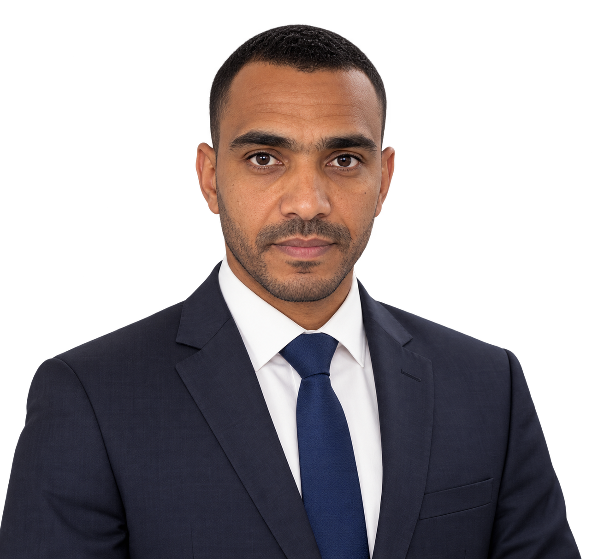
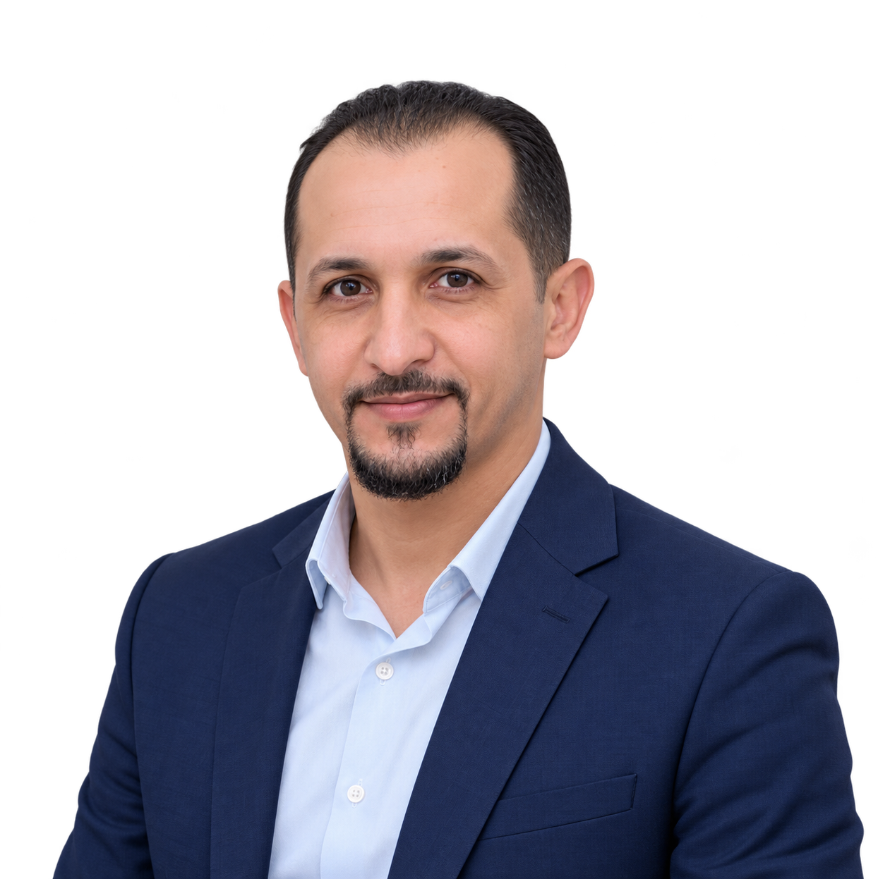
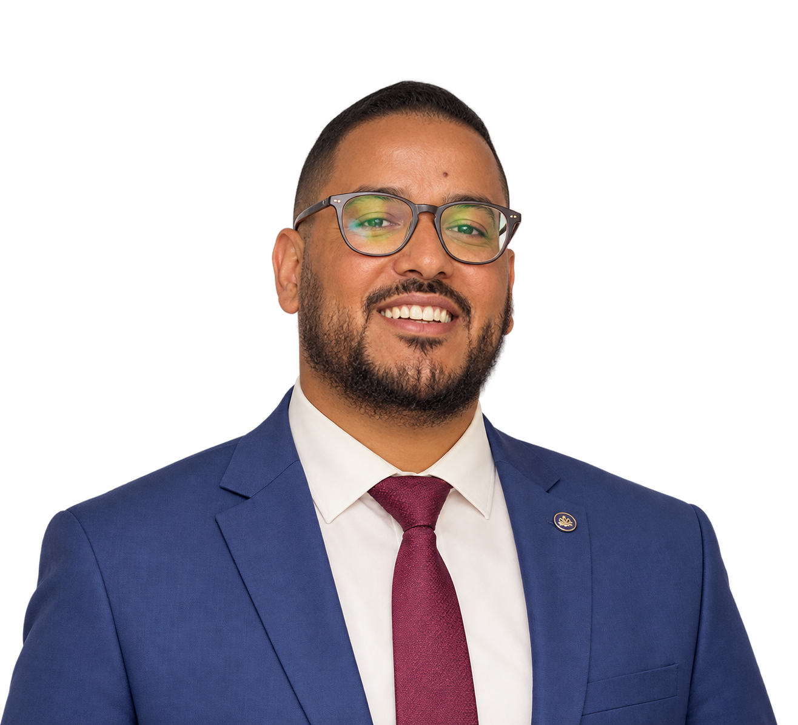
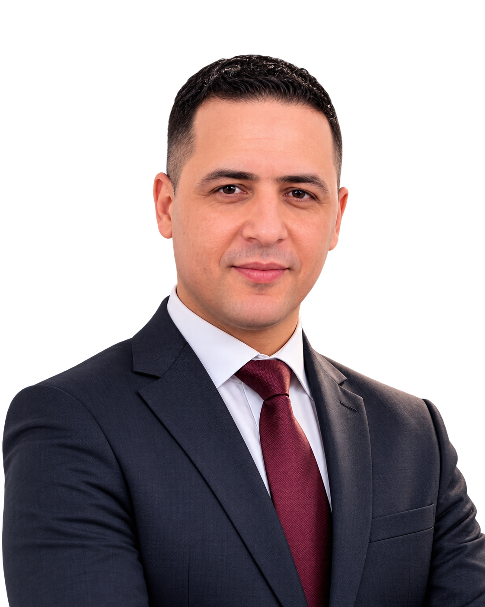
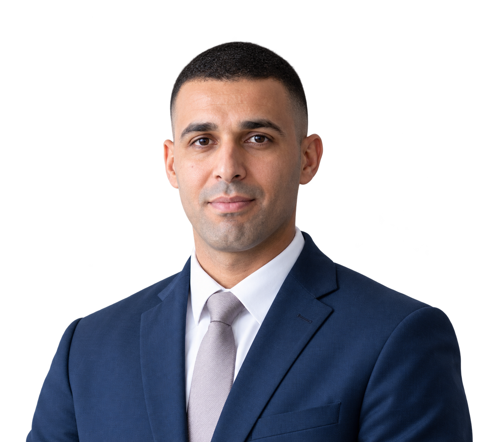
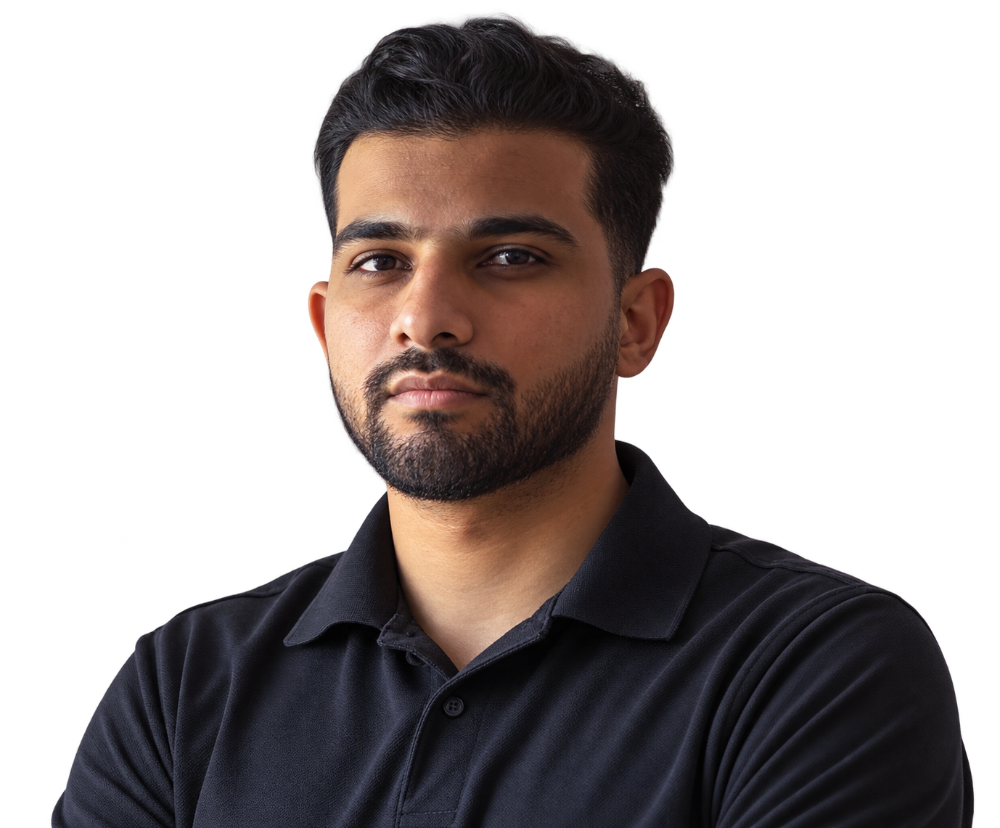
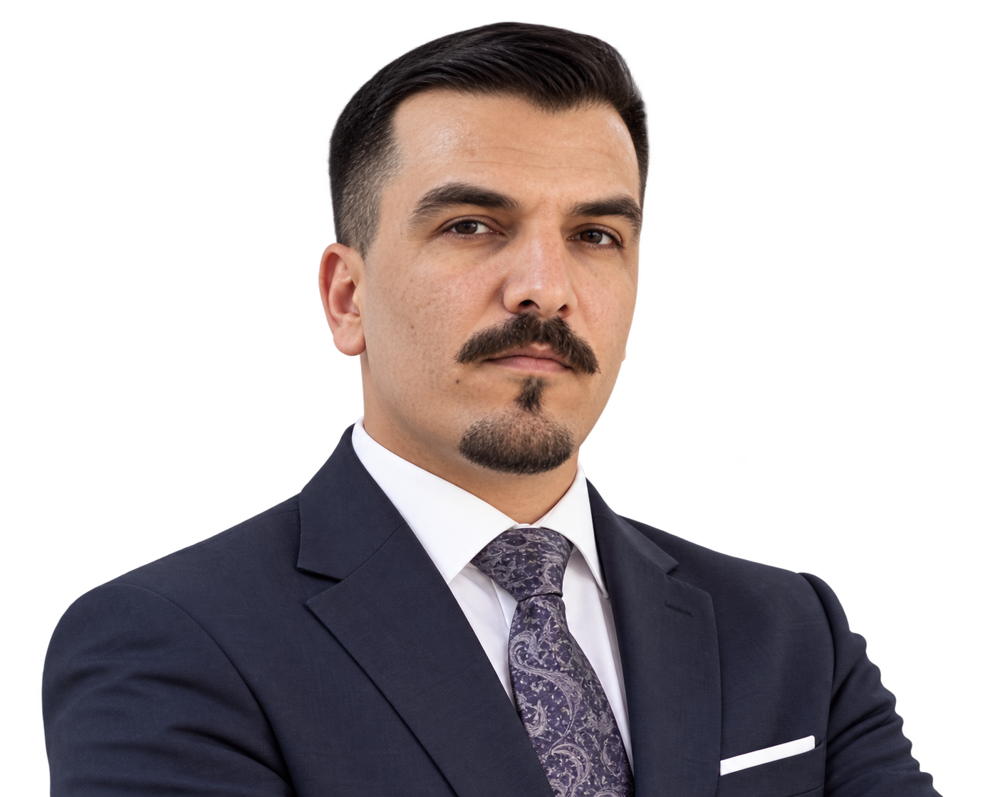

<!doctype html><html lang="ar" dir="rtl"><meta charset="utf-8"><meta name="viewport" content="width=device-width,initial-scale=1"><title>Sonaa Najah - Asset review</title><style>body{font:16px Arial,sans-serif;background:#f8f3ff;color:#240763;margin:30px;line-height:1.8}main{max-width:1200px;margin:auto}a{color:#5515a8}.grid{display:grid;grid-template-columns:repeat(auto-fit,minmax(200px,1fr));gap:20px}figure{margin:0;background:white;border:1px solid #dfc8fb;border-radius:20px;padding:20px;text-align:center}figure img{width:100%;height:230px;object-fit:contain;background:radial-gradient(ellipse at bottom,#e2c6ff,transparent 65%)}.wide{display:block;width:100%;height:auto;border-radius:20px}.atlas{max-width:800px;margin:auto;background:white}h1,h2{margin-top:35px}figcaption{font-size:14px}small{color:#816398}</style><main><a href="index.html">Sonaa Najah ?</a><h1>Generated assets</h1><small>Built-in ImageGen ? teacher portraits reconstructed from the supplied faculty reference.</small><h2>Hero</h2><h2>Teacher portraits</h2><div class="grid"><figure><figcaption><strong>د. صابر مستور</strong><br>اللغة العربية</figcaption></figure><figure><figcaption><strong>د. محمد أسكنيض</strong><br>اللغة الفرنسية</figcaption></figure><figure><figcaption><strong>د. زكرياء خشاش</strong><br>التربية الإسلامية</figcaption></figure><figure><figcaption><strong>د. زكي الأنصاري</strong><br>الاجتماعيات</figcaption></figure><figure><figcaption><strong>د. عبد الرحيم الزعاري</strong><br>علوم الحياة والأرض</figcaption></figure><figure><figcaption><strong>د. نوفل فزازي</strong><br>الفلسفة</figcaption></figure><figure><figcaption><strong>د. أمين السحات</strong><br>اللغة الإنجليزية</figcaption></figure><figure><figcaption><strong>د. المهدي سويومطو</strong><br>الرياضيات</figcaption></figure><figure><figcaption><strong>د. زكرياء عنترة</strong><br>الفيزياء والكيمياء</figcaption></figure><figure><figcaption><strong>د. عثمان سلاسي</strong><br>الإشراف والمواكبة</figcaption></figure></div><h2>Students & decoration</h2><div class="grid"><figure><figcaption>student-middle</figcaption></figure><figure><figcaption>student-first</figcaption></figure><figure><figcaption>student-second</figcaption></figure><figure><figcaption>cta-books</figcaption></figure></div><h2>25 education icons</h2></main></html>